Tweet
Tweet
Any intelligence that the OCR process requires resides with the software. In fact, OCR software is so sophisticated that it belongs to the domain of the artificial intelligence (“A.I.”). That’s because OCR imitates the human reading process.
OCR is a sub-field of pattern recognition. The biometric technologies that allow computers to recognize human voices, faces, fingerprints and retinae use pattern recognition as well, but make no mistake: these technologies are very different. (Fingerprint recognition is now so common it’s used to unlock your smartphone!) In the past, some companies were simultaneously involved in OCR and other types of pattern recognition, but generally speaking, OCR is now a specialty handled by companies that dedicate themselves exclusively to text recognition.
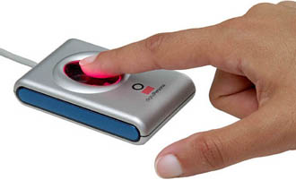 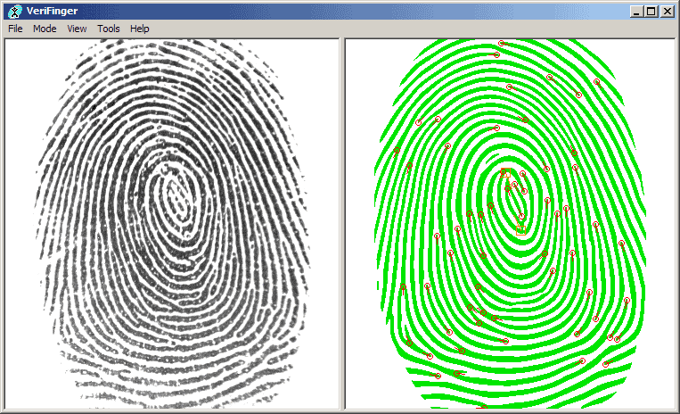
Pattern recognition has even found its way to your smartphone: think of mobile app Shazam that recognizes pop songs for you, PlantSnap and PictureThis which educate you about plant species you quickly photograph with your camera in the park etc..
Although the first research and development of OCR began more than 40 years ago in “Artificial Intelligence” labs and as popular as scanners may have become, this technology is still unknown to some people who could use it for their document entry applications…
The Intelligent Machine Corporation introduced the very first OCR software in 1959. Their system could read one font in one point size. Not surprisingly, it was a financial institution that made use of it: the system processed preprinted mortgage loan applications.
Multifont systems capable of several carefully selected fonts followed. These first systems were pretty slow, not all that accurate and in most cases limited to the recognition of special fonts (E13B, OCR-A and OCR-B) founds on checks. These fonts were actually custom-designed to be read by machines in the year 1966: E13B and OCR-A were the first “machine-readable” typefaces designed in the U.S.A., OCR-B was designed in Europe.
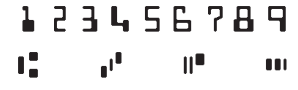
banking font E13B
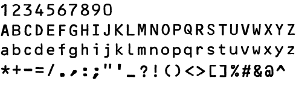
banking font OCR-B
Unlike OCR-B, which looks more natural, the features of E13B and OCR-A were exaggerated to improve the recognition rate. Compare the digit ‘8’ of OCR-A with the uppercase letter “B”, for instance. Clearly distinct! Or compare the numeral ‘0’ with the “O”, the ‘1’ with the “l”, the ‘9’ with the “q”. Not much chance of confusing these similar characters, right?
banking font OCR-A
Remember that these font were designed to be read optically by the first, primitive OCR systems! Bad scans where the image is for instance too dark or too light, smudges on the document etc. can degrade the image quality greatly, and yet misreads had to be avoided as much as possible.
Because of their unusual, “digital” look, these fonts are sometimes used in magazines and advertising. More importantly, OCR-A for some funny reason always gets used in science-fiction movies — you’ll see it in, say, the lettering on the side of a spaceship —, in technological contexts on TV and the likes…
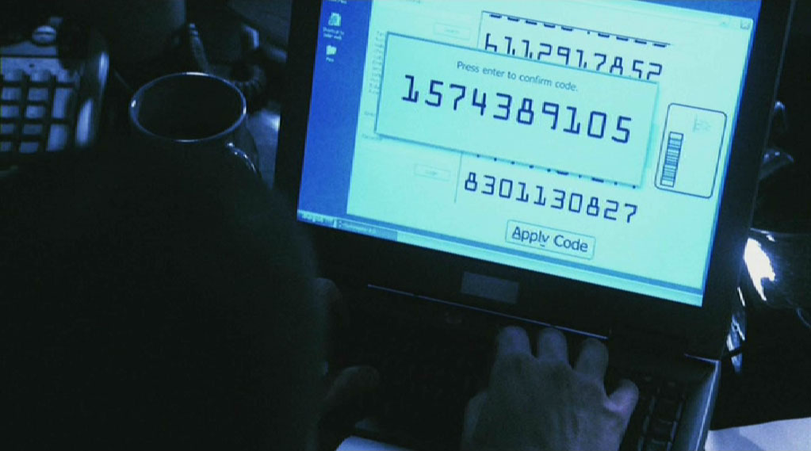
Those were the days when Frank Abagnale, the principal character of Steven Spielberg’s movie “Catch Me If You Can”, ripped off American banks for $2.5 million between the ages 16 and 21 by forging checks very realistically. (We’re talking greenbacks from the 60s here, not the inflated dollar of today!)
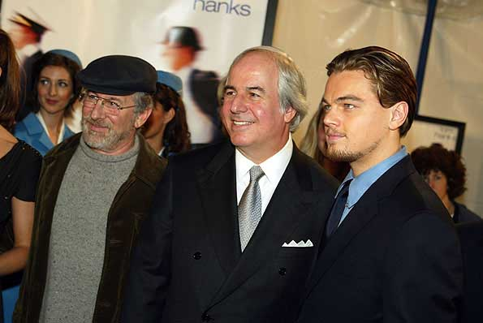
To make the checks look realistic, he printed false data on them with his own MICR (“Magnetic Ink Character Recognition”) equipment. E13B is a “magnetic” typeface because magnetic readers, not optical scanners, are mostly used to recognize checks. The data on the check’s “codeline” is printed with special magnetic ink: the ink makes them legible to the bank teller, the magnetic particles in the ink are interpreted by the magnetic readers. (And as the movie tells us, magnetic ink has a particular smell: that’s because 50% of the ink is actually iron oxide — to me and you, that’s rust!)
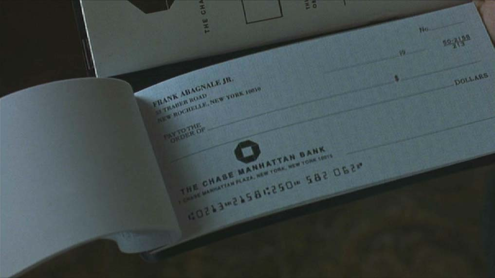
The codeline indicates the amount of the check and which bank issued it. By manipulating the routing data on the codeline, each check Abagnale cashed got sent to the opposite corner of the U.S., which meant it took the American banking system about one week to find out the check was even false. Traveling fast, he was long gone by then…
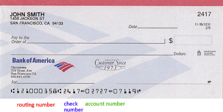 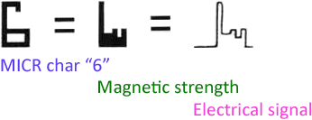
Frank Abagnale also impersonated an airline pilot for Pan Am, a paediatrician in Georgia, a sociology professor in Utah and an assistant district attorney (D.A.) in New Orleans — he fabricated a Harvard law degree but genuinely passed the bar exam in Louisiana. And he acted as an F.B.I. agent several times to avoid his arrest and played a prison inspector to escape from an Atlanta prison.
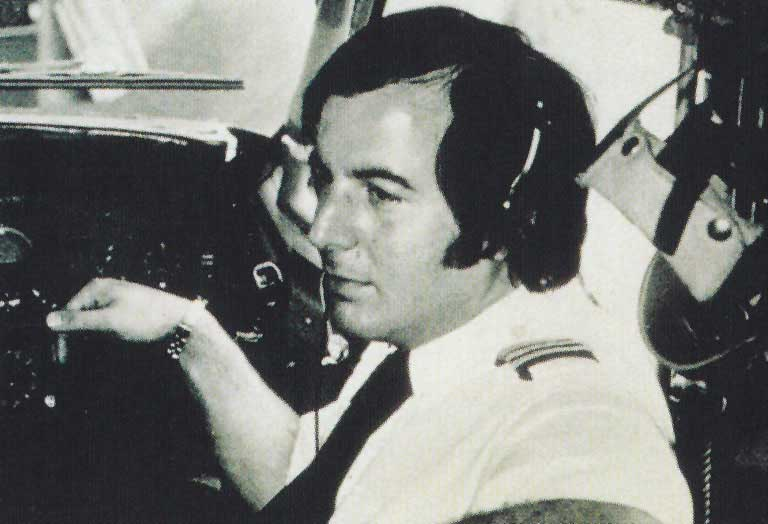
He was finally caught and served time in prison in three countries — France, Sweden and the U.S.A. But all’s well that ends well: poacher turned gamekeeper and Abagnale now fights white-collar crime as secure document consultant of the major financial institutions and Fortune 500 companies…
Visit the sister web site “Catch the Truth If You Can – Spielberg, Abagnale and OCR” to learn more about Abagnale’s adventures, Steven Spielberg’s movie, MICR or Ronald Reagan’s and Arnold Spielberg’s role in it.
The banking font you see on the codeline of American checks is E13B. The European, mainly French, financial sector developed another magnetic font: CMC-7!
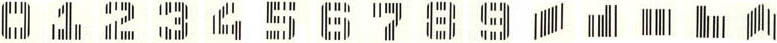
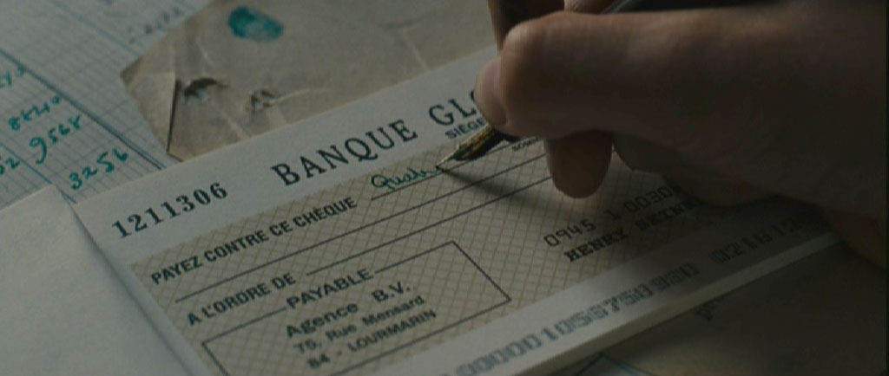
So much for the recognition of checks that kicked off character recognition. In 1978, Kurzweil Computer Products developed a system that could be trained by the user to read any font. The training might take several hours, but the resulting files were saved on disk and could be re-used later on.
Where does this technology come from? — Reaping the benefits of the neural revolution — … Or do word recognition — Each expert casts his vote — Autolearning font shapes — Putting more feet on the street — … With a document revolution thrown in
Home page — Intro — Scanners — Images — History — OCR — Languages — Accuracy — Output — BCR — Pen scanners — Sitemap — Search — Contact – Feedback